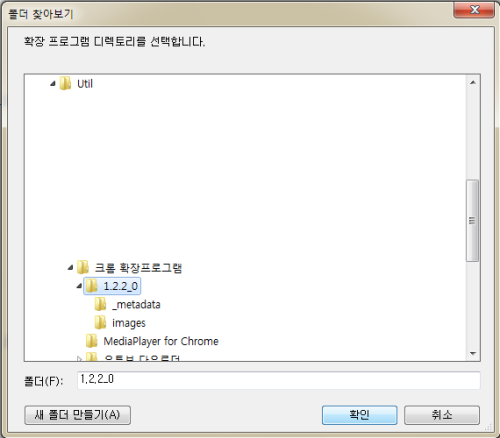
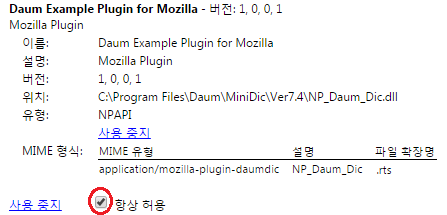

14.04.23
※ 크롬 버전 업으로 인해서 현재 확장 프로그램이 작동되지 않습니다. 다음꼬마사전이 새로 나올 때까지 기달리셔야 될 듯 합니다.
크롬에서 모르는 단어가 나오면 예전에는 복사해서 일일이 검색을 했었다. 그런데 다음 꼬마사전을 알고 나서는 모르는 영어단어가 나오면 그 영어단어 위에 마우스 커서를 올리면 자동으로 단어 해석이 나온다.
엌. 문제가 생겼다. 크롬 웹스토어에서 꼬마사전이 등록되어 있었는데 사라졌다. 더 이상 지원을 하지 않는 것인가? -_-;;
어쨌든 내가 직접 다음꼬마사전 확장프로그램을 올렸다.
주의사항 : 다음 꼬마사전이 먼저 설치되어 있어야 합니다. 설치하러가기

크롬 접속 - 확장프로그램 - 개발자모드 체크 - 압축해제된 확장 프로그램 로드 - 해당폴더 선택 - 끝

설치하고 나서 chrome://plugins 가서 'Daum Example Plugin for Mozilla'를 찾고 '항상허용'에 체크해주면 끝